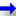

<!doctype html>
<html lang="en">
    <head>
        <meta charset="utf-8">
        <meta http-equiv="X-UA-Compatible" content="IE=edge">
        <meta name="viewport" content="initial-scale=1,user-scalable=no,maximum-scale=1,width=device-width">
        <meta name="mobile-web-app-capable" content="yes">
        <meta name="apple-mobile-web-app-capable" content="yes">
        <link rel="stylesheet" href="css/leaflet.css">
        <link rel="stylesheet" href="css/L.Control.Layers.Tree.css">
        <link rel="stylesheet" href="css/qgis2web.css">
        <link rel="stylesheet" href="css/fontawesome-all.min.css">
        <link rel="stylesheet" href="css/leaflet.photon.css">
        <link rel="stylesheet" href="css/leaflet-measure.css">
        <style>
        html, body, #map {
            width: 100%;
            height: 100%;
            padding: 0;
            margin: 0;
        }
        </style>
        <title>Mobilité professionnelles des individus</title>
    </head>
    <body>
        <div id="map">
        </div>
        <script src="js/qgis2web_expressions.js"></script>
        <script src="js/leaflet.js"></script>
        <script src="js/L.Control.Layers.Tree.min.js"></script>
        <script src="js/leaflet.rotatedMarker.js"></script>
        <script src="js/leaflet.pattern.js"></script>
        <script src="js/leaflet-hash.js"></script>
        <script src="js/Autolinker.min.js"></script>
        <script src="js/rbush.min.js"></script>
        <script src="js/labelgun.min.js"></script>
        <script src="js/labels.js"></script>
        <script src="js/leaflet.photon.js"></script>
        <script src="js/leaflet-measure.js"></script>
        <script src="data/CommuneIDF_1.js"></script>
        <script src="data/FluxenOursins_2.js"></script>
        <script src="data/JOUARSPONTCHARTRAIN_3.js"></script>
        <script>
        var highlightLayer;
        function highlightFeature(e) {
            highlightLayer = e.target;
            highlightLayer.openPopup();
        }
        var map = L.map('map', {
            zoomControl:false, maxZoom:28, minZoom:1
        }).fitBounds([[48.45651406896776,0.7997012515354166],[49.23347049245139,3.060575906152193]]);
        var hash = new L.Hash(map);
        map.attributionControl.setPrefix('<a href="https://github.com/tomchadwin/qgis2web" target="_blank">qgis2web</a> &middot; <a href="https://leafletjs.com" title="A JS library for interactive maps">Leaflet</a> &middot; <a href="https://qgis.org">QGIS</a>');
        var autolinker = new Autolinker({truncate: {length: 30, location: 'smart'}});
        // remove popup's row if "visible-with-data"
        function removeEmptyRowsFromPopupContent(content, feature) {
         var tempDiv = document.createElement('div');
         tempDiv.innerHTML = content;
         var rows = tempDiv.querySelectorAll('tr');
         for (var i = 0; i < rows.length; i++) {
             var td = rows[i].querySelector('td.visible-with-data');
             var key = td ? td.id : '';
             if (td && td.classList.contains('visible-with-data') && feature.properties[key] == null) {
                 rows[i].parentNode.removeChild(rows[i]);
             }
         }
         return tempDiv.innerHTML;
        }
        // add class to format popup if it contains media
		function addClassToPopupIfMedia(content, popup) {
			var tempDiv = document.createElement('div');
			tempDiv.innerHTML = content;
			if (tempDiv.querySelector('td img')) {
				popup._contentNode.classList.add('media');
					// Delay to force the redraw
					setTimeout(function() {
						popup.update();
					}, 10);
			} else {
				popup._contentNode.classList.remove('media');
			}
		}
        var title = new L.Control({'position':'topleft'});
        title.onAdd = function (map) {
            this._div = L.DomUtil.create('div', 'info');
            this.update();
            return this._div;
        };
        title.update = function () {
            this._div.innerHTML = '<h2>Mobilité professionnelles des individus</h2>';
        };
        title.addTo(map);
        var abstract = new L.Control({'position':'topleft'});
        abstract.onAdd = function (map) {
            this._div = L.DomUtil.create('div',
            'leaflet-control abstract');
            this._div.id = 'abstract'

                abstract.show();
                return this._div;
            };
            abstract.show = function () {
                this._div.classList.remove("abstract");
                this._div.classList.add("abstractUncollapsed");
                this._div.innerHTML = 'Mobilité professionnelles des individus : déplacements commune de Jouart-Porchartin vers d\'autres communes de travail en 2022.<br /><br />';
        };
        abstract.addTo(map);
        var zoomControl = L.control.zoom({
            position: 'topleft'
        }).addTo(map);
        var measureControl = new L.Control.Measure({
            position: 'topleft',
            primaryLengthUnit: 'meters',
            secondaryLengthUnit: 'kilometers',
            primaryAreaUnit: 'sqmeters',
            secondaryAreaUnit: 'hectares'
        });
        measureControl.addTo(map);
        document.getElementsByClassName('leaflet-control-measure-toggle')[0].innerHTML = '';
        document.getElementsByClassName('leaflet-control-measure-toggle')[0].className += ' fas fa-ruler';
        var bounds_group = new L.featureGroup([]);
        function setBounds() {
        }
        map.createPane('pane_FondOSM_0');
        map.getPane('pane_FondOSM_0').style.zIndex = 400;
        var layer_FondOSM_0 = L.tileLayer('http://tile.openstreetmap.org/{z}/{x}/{y}.png', {
            pane: 'pane_FondOSM_0',
            opacity: 1.0,
            attribution: '<a href="https://www.openstreetmap.org/copyright">© OpenStreetMap contributors, CC-BY-SA</a>',
            minZoom: 1,
            maxZoom: 28,
            minNativeZoom: 0,
            maxNativeZoom: 19
        });
        layer_FondOSM_0;
        map.addLayer(layer_FondOSM_0);
        function pop_CommuneIDF_1(feature, layer) {
            layer.on({
                mouseout: function(e) {
                    if (typeof layer.closePopup == 'function') {
                        layer.closePopup();
                    } else {
                        layer.eachLayer(function(feature){
                            feature.closePopup()
                        });
                    }
                },
                mouseover: highlightFeature,
            });
            var popupContent = '<table>\
                    <tr>\
                        <td class="visible-with-data" id="NOM_COM_M" colspan="2"><strong>Commune : </strong><br />' + (feature.properties['NOM_COM_M'] !== null ? autolinker.link(String(feature.properties['NOM_COM_M']).replace(/'/g, '\'').toLocaleString()) : '') + '</td>\
                    </tr>\
                    <tr>\
                        <td class="visible-with-data" id="INSEE_COM" colspan="2"><strong>Code Insee commune</strong><br />' + (feature.properties['INSEE_COM'] !== null ? autolinker.link(String(feature.properties['INSEE_COM']).replace(/'/g, '\'').toLocaleString()) : '') + '</td>\
                    </tr>\
                    <tr>\
                        <td class="visible-with-data" id="POPULATION" colspan="2"><strong>Population : </strong><br />' + (feature.properties['POPULATION'] !== null ? autolinker.link(String(feature.properties['POPULATION']).replace(/'/g, '\'').toLocaleString()) : '') + '</td>\
                    </tr>\
                    <tr>\
                        <td colspan="2">' + (feature.properties['INSEE_DEP'] !== null ? autolinker.link(String(feature.properties['INSEE_DEP']).replace(/'/g, '\'').toLocaleString()) : '') + '</td>\
                    </tr>\
                </table>';
            var content = removeEmptyRowsFromPopupContent(popupContent, feature);
			layer.on('popupopen', function(e) {
				addClassToPopupIfMedia(content, e.popup);
			});
			layer.bindPopup(content, { maxHeight: 400 });
        }

        function style_CommuneIDF_1_0() {
            return {
                pane: 'pane_CommuneIDF_1',
                opacity: 1,
                color: 'rgba(35,35,35,1.0)',
                dashArray: '',
                lineCap: 'butt',
                lineJoin: 'miter',
                weight: 1.0, 
                fillOpacity: 0,
                interactive: true,
            }
        }
        map.createPane('pane_CommuneIDF_1');
        map.getPane('pane_CommuneIDF_1').style.zIndex = 401;
        map.getPane('pane_CommuneIDF_1').style['mix-blend-mode'] = 'normal';
        var layer_CommuneIDF_1 = new L.geoJson(json_CommuneIDF_1, {
            attribution: '',
            interactive: true,
            dataVar: 'json_CommuneIDF_1',
            layerName: 'layer_CommuneIDF_1',
            pane: 'pane_CommuneIDF_1',
            onEachFeature: pop_CommuneIDF_1,
            style: style_CommuneIDF_1_0,
        });
        bounds_group.addLayer(layer_CommuneIDF_1);
        map.addLayer(layer_CommuneIDF_1);
        function pop_FluxenOursins_2(feature, layer) {
            layer.on({
                mouseout: function(e) {
                    if (typeof layer.closePopup == 'function') {
                        layer.closePopup();
                    } else {
                        layer.eachLayer(function(feature){
                            feature.closePopup()
                        });
                    }
                },
                mouseover: highlightFeature,
            });
            var popupContent = '<table>\
                    <tr>\
                        <th scope="row">ORIGINE</th>\
                        <td class="visible-with-data" id="ORIGINE">' + (feature.properties['ORIGINE'] !== null ? autolinker.link(String(feature.properties['ORIGINE']).replace(/'/g, '\'').toLocaleString()) : '') + '</td>\
                    </tr>\
                    <tr>\
                        <th scope="row">DEST</th>\
                        <td class="visible-with-data" id="DEST">' + (feature.properties['DEST'] !== null ? autolinker.link(String(feature.properties['DEST']).replace(/'/g, '\'').toLocaleString()) : '') + '</td>\
                    </tr>\
                </table>';
            var content = removeEmptyRowsFromPopupContent(popupContent, feature);
			layer.on('popupopen', function(e) {
				addClassToPopupIfMedia(content, e.popup);
			});
			layer.bindPopup(content, { maxHeight: 400 });
        }

        function style_FluxenOursins_2_0(feature) {
            if (feature.properties['FLUX'] >= 10.141875 && feature.properties['FLUX'] <= 40.324529 ) {
                return {
                pane: 'pane_FluxenOursins_2',
                interactive: true,
            }
            }
            if (feature.properties['FLUX'] >= 40.324529 && feature.properties['FLUX'] <= 70.507184 ) {
                return {
                pane: 'pane_FluxenOursins_2',
                interactive: true,
            }
            }
            if (feature.properties['FLUX'] >= 70.507184 && feature.properties['FLUX'] <= 100.689839 ) {
                return {
                pane: 'pane_FluxenOursins_2',
                interactive: true,
            }
            }
            if (feature.properties['FLUX'] >= 100.689839 && feature.properties['FLUX'] <= 130.872493 ) {
                return {
                pane: 'pane_FluxenOursins_2',
                interactive: true,
            }
            }
            if (feature.properties['FLUX'] >= 130.872493 && feature.properties['FLUX'] <= 161.055148 ) {
                return {
                pane: 'pane_FluxenOursins_2',
                interactive: true,
            }
            }
        }
        map.createPane('pane_FluxenOursins_2');
        map.getPane('pane_FluxenOursins_2').style.zIndex = 402;
        map.getPane('pane_FluxenOursins_2').style['mix-blend-mode'] = 'normal';
        var layer_FluxenOursins_2 = new L.geoJson(json_FluxenOursins_2, {
            attribution: '',
            interactive: true,
            dataVar: 'json_FluxenOursins_2',
            layerName: 'layer_FluxenOursins_2',
            pane: 'pane_FluxenOursins_2',
            onEachFeature: pop_FluxenOursins_2,
            style: style_FluxenOursins_2_0,
        });
        bounds_group.addLayer(layer_FluxenOursins_2);
        map.addLayer(layer_FluxenOursins_2);
        function pop_JOUARSPONTCHARTRAIN_3(feature, layer) {
            layer.on({
                mouseout: function(e) {
                    if (typeof layer.closePopup == 'function') {
                        layer.closePopup();
                    } else {
                        layer.eachLayer(function(feature){
                            feature.closePopup()
                        });
                    }
                },
                mouseover: highlightFeature,
            });
            var popupContent = '<table>\
                    <tr>\
                        <th scope="row">Commune : </th>\
                        <td class="visible-with-data" id="NOM_COM">' + (feature.properties['NOM_COM'] !== null ? autolinker.link(String(feature.properties['NOM_COM']).replace(/'/g, '\'').toLocaleString()) : '') + '</td>\
                    </tr>\
                    <tr>\
                        <th scope="row">Code Insee commune</th>\
                        <td class="visible-with-data" id="INSEE_COM">' + (feature.properties['INSEE_COM'] !== null ? autolinker.link(String(feature.properties['INSEE_COM']).replace(/'/g, '\'').toLocaleString()) : '') + '</td>\
                    </tr>\
                    <tr>\
                        <th scope="row">Population</th>\
                        <td class="visible-with-data" id="POPULATION">' + (feature.properties['POPULATION'] !== null ? autolinker.link(String(feature.properties['POPULATION']).replace(/'/g, '\'').toLocaleString()) : '') + '</td>\
                    </tr>\
                    <tr>\
                        <th scope="row">INSEE_REG</th>\
                        <td class="visible-with-data" id="INSEE_REG">' + (feature.properties['INSEE_REG'] !== null ? autolinker.link(String(feature.properties['INSEE_REG']).replace(/'/g, '\'').toLocaleString()) : '') + '</td>\
                    </tr>\
                </table>';
            var content = removeEmptyRowsFromPopupContent(popupContent, feature);
			layer.on('popupopen', function(e) {
				addClassToPopupIfMedia(content, e.popup);
			});
			layer.bindPopup(content, { maxHeight: 400 });
        }

        function style_JOUARSPONTCHARTRAIN_3_0() {
            return {
                pane: 'pane_JOUARSPONTCHARTRAIN_3',
                opacity: 1,
                color: 'rgba(255,0,0,1.0)',
                dashArray: '',
                lineCap: 'butt',
                lineJoin: 'miter',
                weight: 3.0, 
                fillOpacity: 0,
                interactive: true,
            }
        }
        map.createPane('pane_JOUARSPONTCHARTRAIN_3');
        map.getPane('pane_JOUARSPONTCHARTRAIN_3').style.zIndex = 403;
        map.getPane('pane_JOUARSPONTCHARTRAIN_3').style['mix-blend-mode'] = 'normal';
        var layer_JOUARSPONTCHARTRAIN_3 = new L.geoJson(json_JOUARSPONTCHARTRAIN_3, {
            attribution: '',
            interactive: true,
            dataVar: 'json_JOUARSPONTCHARTRAIN_3',
            layerName: 'layer_JOUARSPONTCHARTRAIN_3',
            pane: 'pane_JOUARSPONTCHARTRAIN_3',
            onEachFeature: pop_JOUARSPONTCHARTRAIN_3,
            style: style_JOUARSPONTCHARTRAIN_3_0,
        });
        bounds_group.addLayer(layer_JOUARSPONTCHARTRAIN_3);
        map.addLayer(layer_JOUARSPONTCHARTRAIN_3);
        const url = {"Nominatim": "https://nominatim.openstreetmap.org/search?format=geojson&addressdetails=1&",
        "BAN": "https://api-adresse.data.gouv.fr/search/?"}
        var photonControl = L.control.photon({
            url: url["Nominatim"],
            feedbackLabel: '',
            position: 'topleft',
            includePosition: true,
            initial: true,
            // resultsHandler: myHandler,
        }).addTo(map);
        photonControl._container.childNodes[0].style.borderRadius="10px"
        // Create a variable to store the geoJSON data
        var x = null;
        // Create a variable to store the marker
        var marker = null;
        // Add an event listener to the Photon control to create a marker from the returned geoJSON data
        var z = null;
        photonControl.on('selected', function(e) {
            console.log(photonControl.search.resultsContainer);
            if (x != null) {
                map.removeLayer(obj3.marker);
                map.removeLayer(x);
            }
            obj2.gcd = e.choice;
            x = L.geoJSON(obj2.gcd).addTo(map);
            var label = typeof obj2.gcd.properties.label === 'undefined' ? obj2.gcd.properties.display_name : obj2.gcd.properties.label;
            obj3.marker = L.marker(x.getLayers()[0].getLatLng()).bindPopup(label).addTo(map);
            map.setView(x.getLayers()[0].getLatLng(), 17);
            z = typeof e.choice.properties.label === 'undefined'? e.choice.properties.display_name : e.choice.properties.label;
            console.log(e);
            e.target.input.value = z;
        });
        var search = document.getElementsByClassName("leaflet-photon leaflet-control")[0];
        search.classList.add("leaflet-control-search")
        search.style.display = "flex";
        search.style.backgroundColor="rgba(255,255,255,0.5)" 

        // Créer le nouvel élément bouton
        var button = document.createElement("div");
        button.id = "gcd-button-control";
        button.className = "gcd-gl-btn fa fa-search search-button";

        // Ajouter le bouton à l'élément parent
        search.insertBefore(button, search.firstChild);
        last = search.lastChild;
        last.style.display = "none";
        button.addEventListener("click", function (e) {
            if (last.style.display === "none") {
                last.style.display = "block";
            } else {
                last.style.display = "none";
            }
        });
        var overlaysTree = [
            {label: ' JOUARS-PONTCHARTRAIN', layer: layer_JOUARSPONTCHARTRAIN_3},
            {label: 'Flux en Oursins<br /><table><tr><td style="text-align: center;"></td><td>10,1419 - 40,3245</td></tr><tr><td style="text-align: center;"></td><td>40,3245 - 70,5072</td></tr><tr><td style="text-align: center;"></td><td>70,5072 - 100,6898</td></tr><tr><td style="text-align: center;"></td><td>100,6898 - 130,8725</td></tr><tr><td style="text-align: center;"></td><td>130,8725 - 161,0551</td></tr></table>', layer: layer_FluxenOursins_2},
            {label: ' Commune IDF', layer: layer_CommuneIDF_1},
            {label: "Fond OSM", layer: layer_FondOSM_0},]
        var lay = L.control.layers.tree(null, overlaysTree,{
            //namedToggle: true,
            //selectorBack: false,
            //closedSymbol: '&#8862; &#x1f5c0;',
            //openedSymbol: '&#8863; &#x1f5c1;',
            //collapseAll: 'Collapse all',
            //expandAll: 'Expand all',
            collapsed: false, 
        });
        lay.addTo(map);
		document.addEventListener("DOMContentLoaded", function() {
            // set new Layers List height which considers toggle icon
            function newLayersListHeight() {
                var layerScrollbarElement = document.querySelector('.leaflet-control-layers-scrollbar');
                if (layerScrollbarElement) {
                    var layersListElement = document.querySelector('.leaflet-control-layers-list');
                    var originalHeight = layersListElement.style.height 
                        || window.getComputedStyle(layersListElement).height;
                    var newHeight = parseFloat(originalHeight) - 50;
                    layersListElement.style.height = newHeight + 'px';
                }
            }
            var isLayersListExpanded = true;
            var controlLayersElement = document.querySelector('.leaflet-control-layers');
            var toggleLayerControl = document.querySelector('.leaflet-control-layers-toggle');
            // toggle Collapsed/Expanded and apply new Layers List height
            toggleLayerControl.addEventListener('click', function() {
                if (isLayersListExpanded) {
                    controlLayersElement.classList.remove('leaflet-control-layers-expanded');
                } else {
                    controlLayersElement.classList.add('leaflet-control-layers-expanded');
                }
                isLayersListExpanded = !isLayersListExpanded;
                newLayersListHeight()
            });	
			// apply new Layers List height if toggle layerstree
			if (controlLayersElement) {
				controlLayersElement.addEventListener('click', function(event) {
					var toggleLayerHeaderPointer = event.target.closest('.leaflet-layerstree-header-pointer span');
					if (toggleLayerHeaderPointer) {
						newLayersListHeight();
					}
				});
			}
            // Collapsed/Expanded at Start to apply new height
            setTimeout(function() {
                toggleLayerControl.click();
            }, 10);
            setTimeout(function() {
                toggleLayerControl.click();
            }, 10);
            // Collapsed touch/small screen
            var isSmallScreen = window.innerWidth < 650;
            if (isSmallScreen) {
                setTimeout(function() {
                    controlLayersElement.classList.remove('leaflet-control-layers-expanded');
                    isLayersListExpanded = !isLayersListExpanded;
                }, 500);
            }  
        });       
        setBounds();
        </script>
    </body>
</html>
